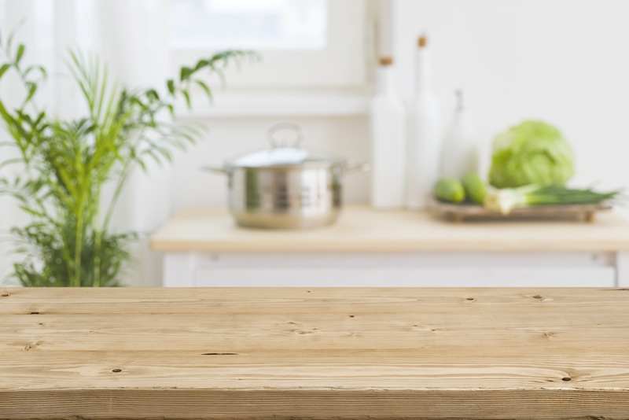
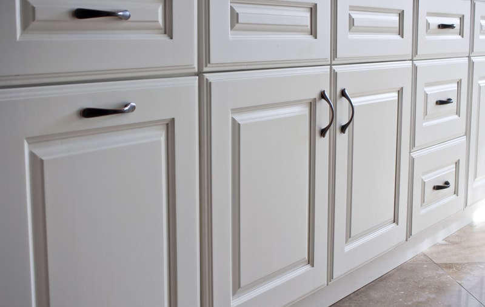
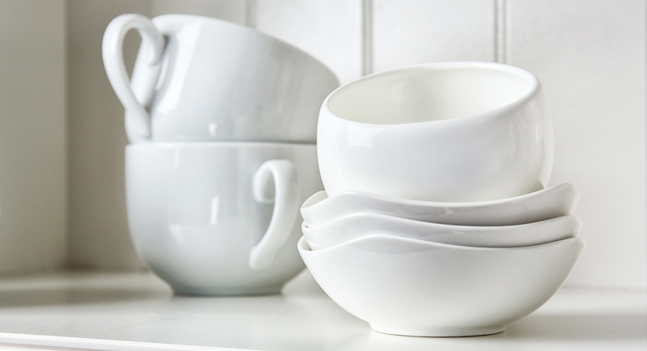
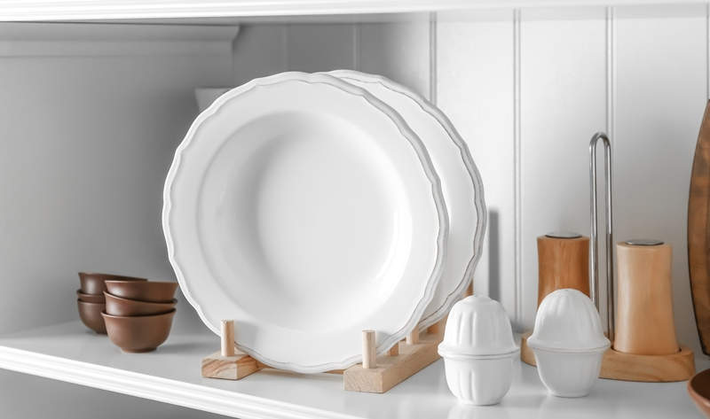
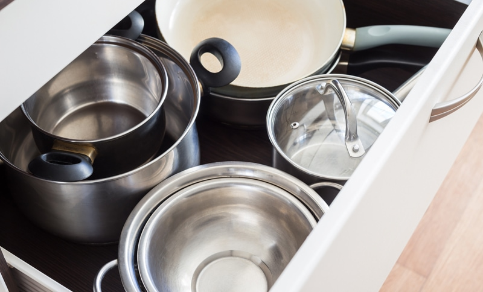
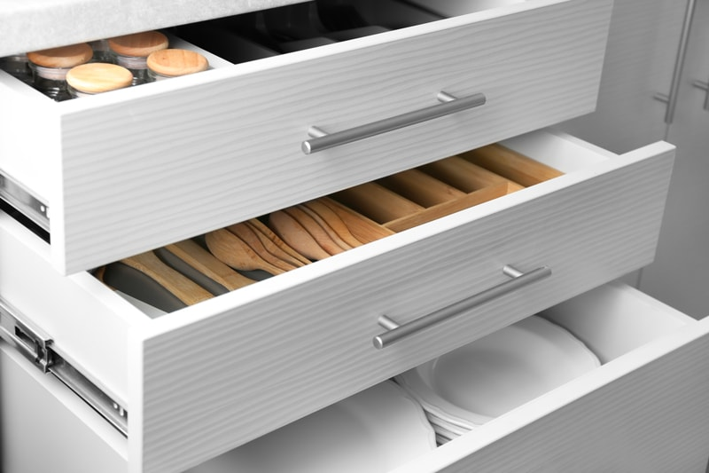

#1 – Organizing the Kitchen – Declutter and Tidy Up
One comment I often get about switching over to a whole food diet (raw or not), is that it’s too time-consuming. And of course, everyone wants things simplified, which I totally get, living in this day and age that we do. Did you know that just by being organized in the kitchen, that you can reduce the amount of time being spent in there and become more efficient? The kitchen is an area of your home that gets used more often than most. So it stands to reason that if your kitchen were more organized and simple to use, your life would feel more peaceful.

Ready to Declutter?!
It’s time to declutter, and there is no better place to start than in the kitchen. It is said that a cluttered space is the sign of a cluttered mind, and in my experience, this is so true. For most people, clutter causes them to waste inordinate amounts of time looking for things they can’t find.
Having a place for all your items will help you stay organized. If the other people in your house are having trouble putting things away and keeping the space clutter-free, it may mean that you have more items than your kitchen can accommodate. So even after your first round of decluttering, it may be a good idea to repeat the process later on. It’s amazing how much more you might purge the second time around.
What exactly is clutter? Clutter is low, stagnant, blocked energy that drains the energy from you and lowers the quality of your life. It is having piles and stacks of items that you rarely use, keeping you disorganized. I hope that I can inspire you to step back and reassess your kitchen. Declutter, organize, and if possible, explore the use of colors, shapes, and scents. It is your kitchen, and it is deeply connected to the quality of your health and your overall well-being.
Before You Get Started
I want to take a moment and map out a few things. First of all, make sure you have an open, uninterrupted time slot. Carve out one or two hours for this task. DO NOT set aside an ENTIRE day to organize your kitchen (unless you LOVE to rearrange or have time for that sort of thing). You’ll feel motivated to do more, and not be burned out by the process. Very few people have the focus, energy, or stamina to spend a whole day organizing. You’ll likely become frustrated and less efficient as the day progresses.
Wear comfortable clothing that allows you to bend, stretch, and reach into those deep, dark corners. Stay hydrated, have a healthy snack sitting in a bowl to munch on, and put on some inspiring music. Choose music that has a rhythm that motivates you. I will say that music with a fast beat might cause you to rush through the process. Slow music, on the other hand, can pull your decluttering enthusiasm to a snail crawl which often makes you second-guess every decision and disrupt your progress. Finding that happy medium will make a world of difference.
Kitchen Cabinets

Create the “Three-Box Method” for your sorting needs. The box method forces you to make a decision item by item, so you don’t end up with a bigger mess.
- Box 1 is for KEEPING
- Box 2 is for DONATE
- Box 3 is for TOSS
Having a box system like this will prevent a sizeable mess as your sort through items. Discard or donate those things that are not frequently used, duplicate items, broken items, or things you forgot you had. If you forgot you had it, do you need it? Do this with each cabinet and drawer. Be ruthless; it’s time to simplify your life. The goal is only to have things you love and use. If you are undecided on whether or not you ought to keep or toss an item, stop and ask yourself, “Does this add value to my life?”
Group Like Items
After your cabinets are all empty, step back and visually walk through the flow and functionality of your kitchen. Based on your culinary habits, consider what is best for you regarding how to organize items. Think about your activities in the kitchen and determine what gets used on a daily basis, put those in a group. Gather your dishes, glassware, and holiday or other seasonal items that only get used once or twice a year. Create a pile for each one. These groupings will help determine placement.

Organize the Cabinets
Now that you have the different groups laid out, it’s time to think about where each item should be stored. Every kitchen is laid out differently, and every kitchen has different demands. The common denominator is that we all eat. The degree of culinary complexity that you delight yourself in will help determine your layout.

Dishware Cabinet
Maybe you are already happy with the placement of your dishware. If you find yourself struggling with fluid movement within your kitchen, now is a great time to rethink the arrangement of things.
- Dishware might be best near the sink or dishwasher for the ease of putting clean dishes away.
- Dishware can also be stored near your eating area to save time when setting the table.
Mixing Bowl Cabinet
If possible, keep all mixing and serving bowls in the same cabinet(s). Knowing where to go to in the time of need will help reduce time in the kitchen.
- Everyday pieces should be kept close to where you do food preparation.
- If you have an island in your kitchen and do most of your food prep there, see how you can store those items within arm’s reach.
- I like to stock my area with bowls that nest inside of one another to reduce their
floor cabinet print.
- I also tend to purchase bowls that are in the same color family. It makes for a cleaner presentation in my mind which keeps me in that zen-state.
- If you have weak hand strength, keep bowls that are lighter in weight. I love glass bowls, but for some, they can be too heavy. If this is you and you can’t afford to get new bowls right now, place them at mid-range reach (not too high, not too low).
- Oversized mixing or serving bowls can be kept in cabinets that are higher up. Those shelves that we all have that either requires someone taller or a step-stool.

Pots and Pans Cabinet
Deep inhale. Pots and pans are my nemesis. (haha) I have always struggled with creating a long-term home for these pieces. They have been in cabinets, drawers, in those Lazy Susan cabinets, under the stove, and so forth. It wasn’t until one day it dawned on me, “You have TOO many pots and pans Amie Sue!” Once I had that ah-ha moment, Bob and I pulled every pot, every pan, and every lid out into the center of the kitchen floor. It was astonishing. Where did they all come from and how is it we have missing lids to pots or pots to lids? Are they partying with the missing socks and spoons?
- Decide if you NEED all the pots and pans that you own.
- If you have HUGE pots taking up valuable kitchen cabinet space and you only use it once in a blue moon, relocate it. The pantry? The hall closet? The garage?
- Keep the lids near or with the pans.
- Store them by the stove.
- If you don’t have a cabinet that will work, how about a deep drawer?
Small Appliance Cabinet
Oh, we all have them. Mini food processors, spiralizers, coffee grinders, spice grinders, hand-held blenders, whip-creamer-uppers, and so forth. They are fun and often handy to have. They deserve a rightful spot in the kitchen, but where? In the past, they lived on the countertop. Currently, I love decluttered and clean countertops, so I dedicated a cabinet and a drawer for all of them to gather in. Just like everything else, ask yourself the following questions:
- “Do I ever use this?”
- “Do I have another unit that does the same task?”
- “Do I have all the pieces needed to use this item?”
- Whichever piece(s) you decide to keep, test each one to make sure it works. Give it a good wipe down. If it has a plug-in cord, gather it up and hold it together with a twist tie.
Under the Sink Cabinet
It amazes me how we can be aware and conscious of what we put in and on our bodies, yet many people don’t stop to think about how the cleaning supplies we use affects our overall health as well. Not only do they absorb through our skin, but we also inhale them as we spray their fine mists into the air.
- Remove everything and clean the cabinet floor and sides. It’s always a good idea to line the cabinet floor with contact paper, a baking sheet, a tote, something to catch leaks.
- Toss any harsh chemicals. Educate yourself on environmentally and human-safe cleaners.
- Line your bottles of cleansers in rows so you can see and access what you have.
Pantry Cabinet
I am going to save this for another post, but the main thing I will state here is if at possible keep food separate from non-food items. Just like everything else we store in our kitchen, what we eat requires its own spot.
Ok, you made it through the cabinets. Now it’s time to tackle the drawers! Before you do, it’s time to give yourself a little nourishment and movement. Come back once both are finished. We are halfway through!
Ready to keep moving? Are you feeling recharged? I hope so! If you don’t, this is an excellent time to stop and pick up later. If you aren’t in the mood or have the energy for it, you will make hasty decisions which could be good or bad. So whether you are ready to continue on or if you have come back to pick up where you left off, “Welcome Back!”
Organizing Drawers

Kitchen drawers remind me of a bedroom dresser. They hide clutter; the top drawers are dedicated to the daily items we use, the bottom drawers are for those items that we typically forget we even have, but fear parting with them. And lastly, once organized it takes only one or two days for it all to become a mess again. Are you with me? Please tell me that I am not alone in this. hehe
- So let’s begin. We will use the same “Three Box Method” as we did for cabinets (Box 1 is for KEEPING / Box 2 is for DONATE / Box 3 is for TOSS).
- We are going to make some tough decisions. With each piece ask yourself:
- “When was the last time I USED this?” – Let go of the “someday I will use this” mentality.
- “Do I NEED this?” – If you have more than one of any or each item, “Do I NEED that many?”
- “Do I USE this?” – If so, how often?
- “Does this help to make my life easier?” – There may be some items that you don’t need, but you do use regularly, and they help to simplify things.
- “Is this broken or damaged?”
- “Does it have all its parts?”
- Once all the drawers are empty, give them a thorough cleaning.
- This point is a great time to take a pause and rethink the demands that you put on your kitchen. You can certainly put things back where they belong, but you might find that a total swap-a-roo of things can make your kitchen function much better.
Items to Help Organize Your Drawers
Empty drawers are a blank canvas. Let’s think this through. There are many things that we can do to help keep those drawers organized after you have put in all this hard work. But be forewarned, this isn’t the end-all, be-all. Things get disorganized over time; it’s life. BUT each time you go to re-organize things, use it as a time to rethink accessibility. Over time we create new patterns, needs, and making minor adjustments will keep you moving fluidly through the kitchen.
- Drawer dividers
- Small plastic containers
- Silverware trays
- Knife trays
- Small cardboard boxes
Let’s Dive into Common Kitchen Drawers
Silverware Drawer
I find silverware to be fun. I never used to, so what changed? Well, after Bob and I moved to Oregon, we quickly learned that we had mistakenly given away our silverware when we were packing… that or we lost them. I never knew how picky a person could be until I went shopping with my husband, Bob, whom I love dearly. As we looked at a zillion different sets, I discovered that silverware is just as personal as socks. They have to fit your hand just right, not too heavy, too skinny, and so forth. And the cost! Don’t get me started! So I solved those issues by purchasing used silverware. In my mind I set out to buy mismatched pieces, allowing myself to spend only twenty-five cents per utensil.
After creating a fantastic collection, Bob and I found that it was so much fun to reach into the drawer and pull out a random fork, spoon, or knife. It made us smile, and life is all about those moments. Possessions shouldn’t be what makes you happy, but they can sure make you smile. Let’s get back to the task at hand.
- Go through each piece of silverware and check for damage. I have found forks with bent prongs (betcha that was used to open something haha). Sometimes, spoons can get knicks in them which can cut your lips or tongue. Knives end up with bent tips from when they pried open a can of paint. You get the idea, do a basic check-over.
- Create sets or go wild and crazy like me.
- Take inventory. Do you have enough of each utensil? It’s not unheard for pieces to go missing.
- Clean the drawer and slide a silverware caddy in there to keep them organized.
- Ask yourself if they are placed in the best spot possible. I have moved mine to several different drawers over the years as I have become better acquainted with my kitchen.

Basic Utensil Drawer
Depending on your eating lifestyle, the type of utensils that you own will be personal. It could be handheld spiralizers, rubber spatulas, tongs, slotted spoons, large serving spoons, and so forth. If I am not careful, these drawers can get out of hand. Things end up moving around where I can’t find them. The process may happen more often if I have friends or family who help put dishes away.
- Keep these drawers simple. Keep the basics and donate the rest. How many slotted spoons does a person really need?
- Toss any damaged ones.
- Place near your food prep area, most people will have these drawers near the stove.
Mason Jar Lid Drawer
Hmm, you don’t have one of these? Well, this section may only be for my fellow jar collectors. We use a lot of jars for various functions. A lot of jars means a whole lot of lids. I have tested many different storing ideas, but I always come back to dedicating one drawer to them. I used to create cubbies and organize them by size, but after a few months, I said: “bag it!” Now I am back to just freely tossing them into the drawer. If I were sharing the space with other items, then I would go back to organizing them a bit more tidily.
- Go through all the lids and inserts. If they are rusty, bent, or damaged in any way, it’s time to let them go.
- If you find you have an excessive amount, bag the extra up and either store in the pantry or donate them.
- Keep an eye on this drawer as it can get out of hand in time.
- If you don’t have enough drawers to dedicate one to just jar lids, I suggest putting them on the jars as you store them. Just make sure that they are thoroughly dry before placing them on to prevent rust.
Kitchen Gadget Drawer
Ahh, yes, I had a thing for kitchen gadgets years back. Over the years I acquired quite the collection. But to be honest, it was rare that I ever used one. It took me some time, but eventually, I started to weed out my collection.
- These items take up valuable real-estate in a kitchen, so be honest with yourself as you sort through them.
- Donate any items that you no longer use OR if the function can be accomplished with another tool that you already have.
- Don’t save items for “someday” – only keep what you use.
Dish Towel / Pot Holder Drawer
I have a confession. After spending all of my adult years folding and stacking my dish towels to place them in a drawer, only to find them in total disarray the next day, I no longer fold my kitchen towels! GASP! I know. I come from a strong Type A personality where I like everything neat, organized, and tidy. But I have come to learn that I need to pick my battles in life and keeping my towels folded and in perfect stacks isn’t realistic.
I selected a large drawer that is positioned near the sink and oven. It’s deep and wide. For dishes and cleaning, I use micro cloths from Costco. They run about sixteen dollars for thirty-six of them. They are a perfect size, great for cleaning, and they dry dishes quite well… and we go through a lot of them! After washing and drying them, I gather them all up, open the drawer, drop them in, close it, and move on with life. Every time I open the drawer I smile… I feel mischievous. haha
- Go through all dish towels and discard those that are past their prime.
- As already mentioned, I use micro cloths from Costco. Over time they don’t absorb water very well. I then mark the corner of the towel with a black X, and they go into a bag for the shop. Bob will use them to clean up nasty stuff; oil, grime, you name it… and rather than tossing them in the washer, they go in the trash as they have been well-used.
- Check with your local animal shelter; they are often happy to take larger dish towels.
Junk / Catchall Drawer
Junk drawers are very interesting. I don’t know of a household that doesn’t have at least one. They are those drawers that collect anything and everything, and you fight to get it open because so much clutter is piled in there. You’re nodding your head out of agreement… we have all been there and most likely still are living with such a drawer. Don’t be frustrated with yourself, you’re not alone, and no matter how neat and tidy you get it, it will most likely fall back into a state of chaos. Accept it for what it is.
- Start by emptying the drawer and lining it with containers that can keep everything divided and easy to find once you put it back in the drawer.
- Group everything you want to keep into categories: pens and pencils, batteries, scissors, birthday candles, safety pins, and so on.
- Toss what you don’t want or need: expired coupons, worn-out recipes, etc.
- Place each item that you intend to keep back into the drawer.
Essential Oil Drawer
You may or may not own an essential oil collection. I do, and I have found over time that if I don’t dedicate a space for them, they get lost. This drawer doesn’t have to be in your kitchen. It can be in the bathroom, linen closet, or wherever you find works best. I keep mine in the kitchen because it is the core of our house and I run a diffuser in there all the time. I run other machines throughout the house, and essential oil bottles escape every once in a while, but I find having a central hub for them works best for me. Plus I own many essential oils that are a culinary grade, so it’s useful for me to store them close by.
- Select the area that is most appropriate for you. Be sure little ones or animals can’t get to them.
- If possible, store them upright or at a slant.
- Check Amazon for unique holders and organizers. You are sure to find one that fits perfectly in your dedicated space. I use (these).
I am going to stop right here. I could go on and on dreaming up every possible drawer scenario that may be found in your kitchen. But I feel as though I gave you a good start. Treat each additional drawer in the same manner, asking yourself the same questions. I hope you found this helpful and inspiring! blessings, amie sue
© AmieSue.com